专题 云原生 标签 取证和响应
首发于创新研究院官方博客
RSAConference2022将于旧金山时间6月6日召开。大会的Innovation Sandbox（沙盒）大赛作为“安全圈的奥斯卡”，每年都备受瞩目，成为全球网络安全行业技术创新和投资的风向标。
前不久，RSA官方宣布了最终入选创新沙盒的十强初创公司：Araali Networks、BastionZero,Inc.、Cado Security、Cycode、Dasera、Lightspin、Neosec、Sevco Security、Talon Cyber Security和Torq。
绿盟君将通过背景介绍、产品特点、点评分析等，带大家了解入围的十强厂商。今天，我们要介绍的是厂商是：Cado Security。
- 公司介绍
Cado Security 是一家云原生网络取证和响应平台提供商。该公司于2020年4月成立，目前在英国和美国设有办事处，旨在为安全团队提供更智能、更快速的方式来调查和响应云中的网络安全事件。该公司成立不久便获得150万美元的种子轮融资，2021年又获得1000万美元的A轮融资。
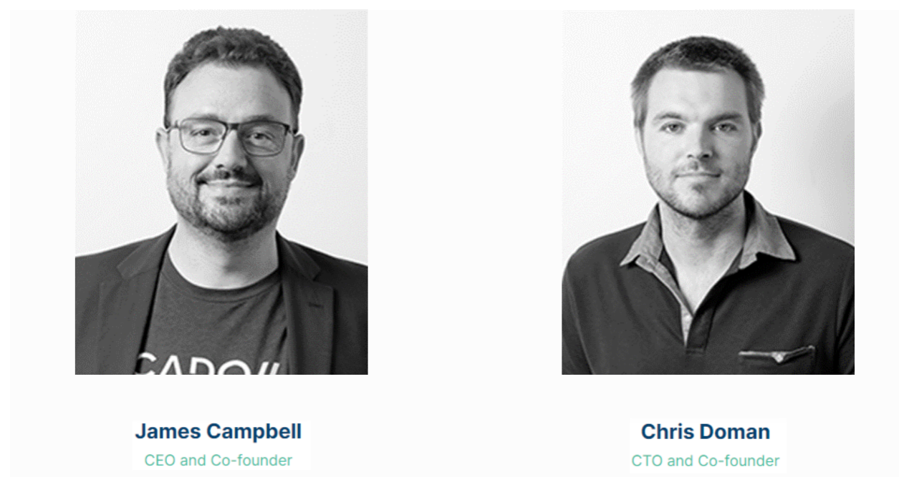
图1 Cado Security创始人
值得关注的是，其创始人团队阵容（如图1所示[[1]]），首席执行官兼联合创始人James Campbell具有丰富的网络事件响应经验和国家情报工作背景，首席技术官兼联合创始人Chris Doman是著名的威胁情报平台——ThreatCrowd的构建者，对威胁情报研究的重要性不言而喻。
- 背景介绍
随着全球数字化转型热潮推进，为提高开发敏捷性和速度，企业逐步将其工作和应用转移到云环境中。云化为租户提供了无数好处，包括更大的敏捷性、灵活性和协作性，但它也带来了新的安全挑战。
正如图2所示[[2]]，随着云化使用的增加，面向云环境的网络攻击数量也在增加。
《Palo Alto Networks Cloud Threat Report 1H 2021》也指出，零售、制造业和政府受到的影响最大，云事件分别增加了 402%、230% 和 205%[3]。
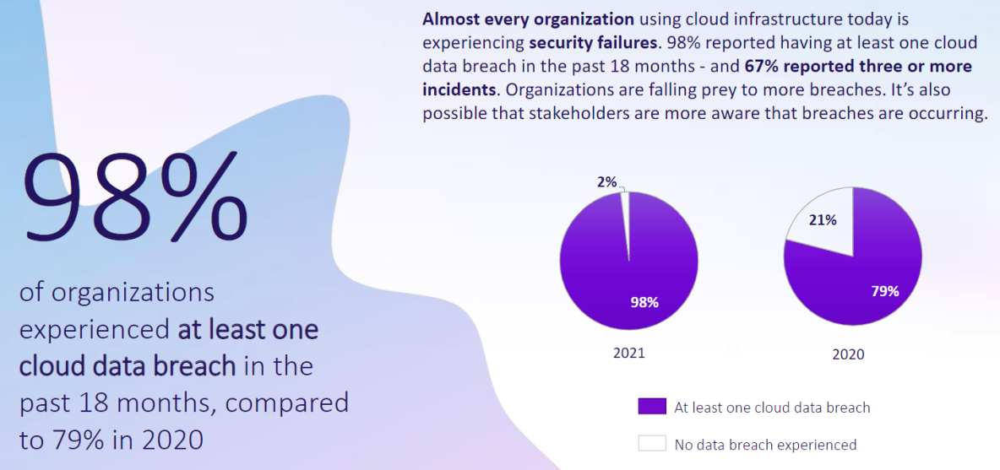
图2 State of Cloud Security 2021-云数据泄露比例
尽管新兴市场的兴起使得安全防护工具逐步向云化场景靠近，但始终没有固若金汤的环境，当云中发生网络安全事件时，数字取证和事件响应变得愈发紧急和重要。然而实际在云环境取证时却面临较多问题，如取证环境往往是多云环境，亦或是多节点或临时性的容器等复杂场景，依靠人工组合有限的工具或者手动获取信息数据经常非常复杂且耗时，且由于环境的差异性或者权限的限制导致证据收集往往停留在现象表面。种种原因都可能导致攻击者达成目标后逃逸并且销毁证据。
在云原生环境中调查需要快速响应、全面跟踪信息和上下文，这使得依靠安全团队进行人工处理变得更加困难，因此云安全市场对能够解决该痛点的安全产品产生了强烈需求。
- 功能特点
Cado Security发布的Cado Response 是一个无代理的云原生数字取证平台。平台支持通过跨多云环境、临时容器、无服务器环境和本地系统进行事件响应取证调查。通过其自动化数据捕获和处理能力，可以轻松为安全团队提供取证级别的详细信息和前所未有的上下文搜索，以消除云调查的复杂性。正如图3所示[[3]]，Cado Response简洁的组件交互使得其在云上的部署更加便捷。
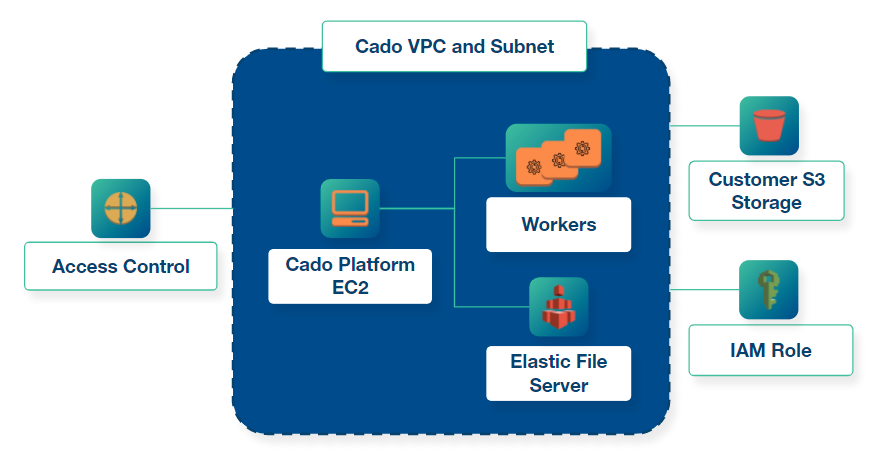
图3 Cado Response关键组件交互
下面我们来看看Cado Response在哪些方面具有较好的实现：
- 环境采集场景丰富
从官网得知目前Cado Response支持从AWS环境（如图4所示[[4]]，包括 EC2实例、Kubernetes 服务以及文件系统）、Azure 环境（包括虚拟机、磁盘）、容器环境、无服务器环境和本地环境进行自动化调查取证。
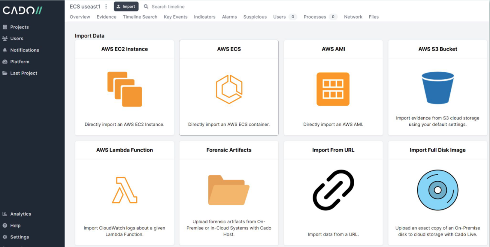
图4 AWS环境信息导入
依赖于其无代理的采集方式，Cado Response对信息采集的种类丰富。在云化业务里，能够支持越多的云厂商环境，对产品的成长将会越有利。目前该平台涵盖了国外主流的两大云厂商，也满足其在产品成长期有足够的舞台打磨产品特性的需求。
关于Cado Response无代理采集方式的技术实现，虽然没有在官网找到具体实现细节（如图6图7所示[[5]]），但根据一些采集依赖（如AWS ECS数据采集）的说明不难猜测，其实现的方式和2021年RSAC提名的WIZ（如图5所示[[6]]）并无二致，可能都是利用云管或者其他组件API进行获取。
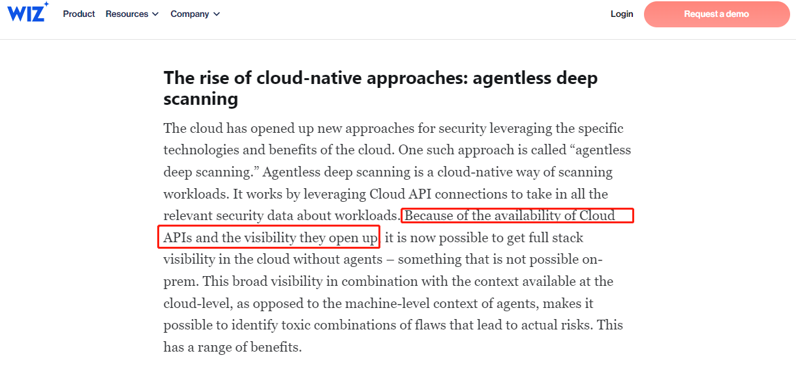
图5 WIZ关于无代理扫描的描述
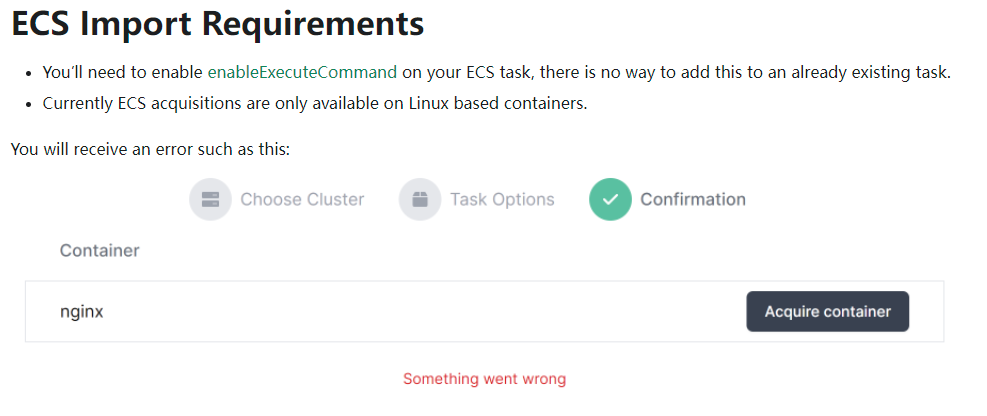
图6 Cado Response采集AWS ESC数据的条件
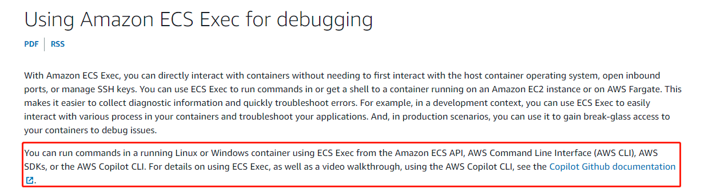图7 AWS关于ECS Exec的支持
这里有必要澄清的是，Cado Response的无代理模式是针对云场景的采集方式，其支持的主机采集仍然采用传统的脚本采集方式，正如图8所示[[7]]脚本支持从平台生成和直接下载两种方式。
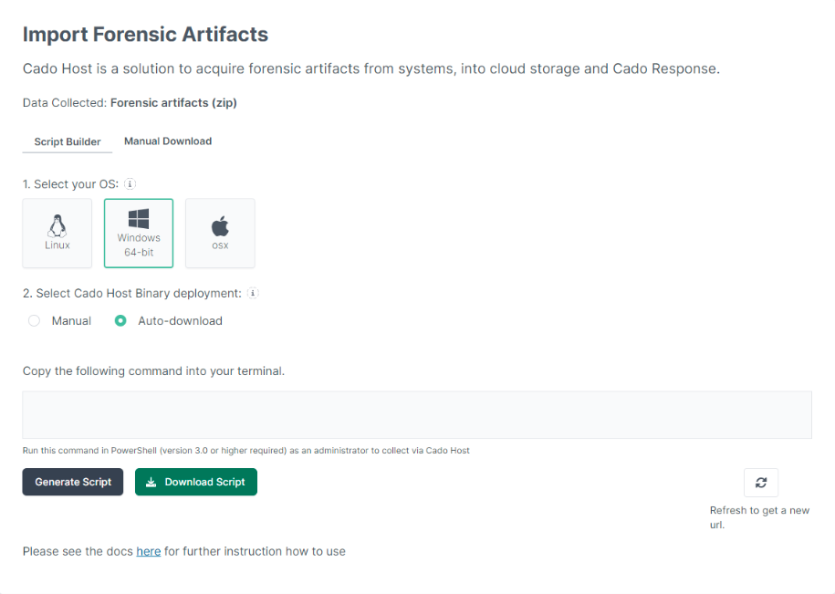
图8 主机采集脚本下载
- 取证速度快，结果可视化
依赖于Cado Response正在申请专利的自动化工具和架构方法（因此具体方法没有详细的说明），可自动向上和向下扩展以提供快速、并行的数据处理，以及大量的自动化工具集，其取证响应迅速。以AWS的ECS调查取证为例，选定具体的集群和任务后，短短几分钟即可以看到一些可疑活动已被标记并展示出来（如图9所示[5]）。
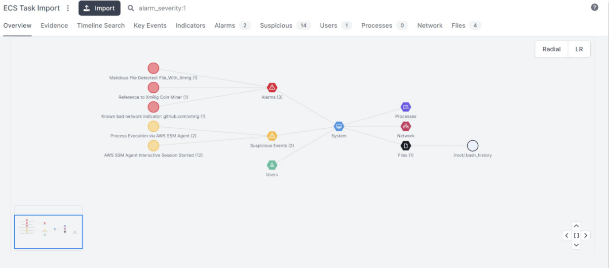
图9 被标记的可疑活动证据
- 支持自动识别和风险标注
得益于机器学习和威胁情报的基础能力，取证结果支持自动识别威胁活动，并标注告警。当发现可疑的活动后，其告警页面有具体响应的告警活动，如图10所示[5]。
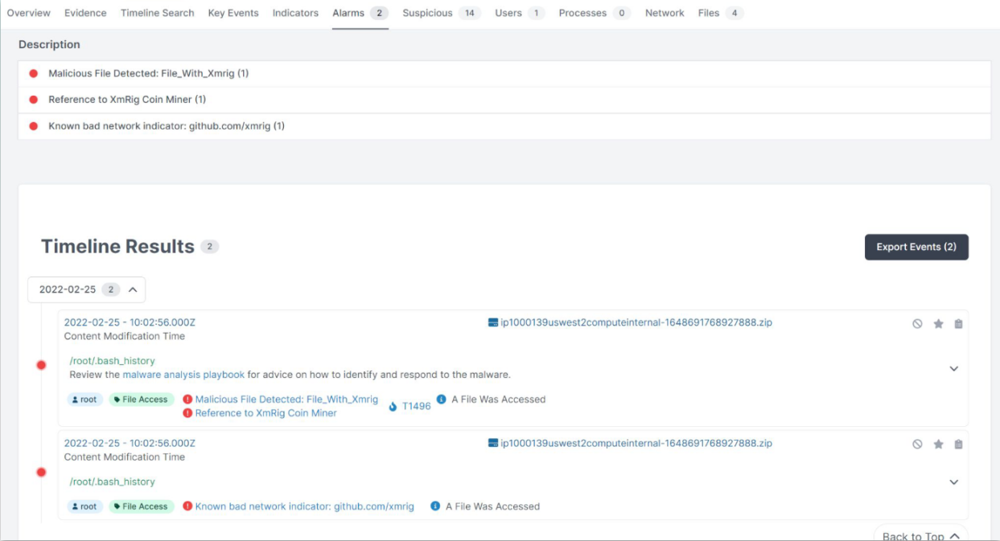
图10 Cado Response的xmrig告警
相对于面向云原生的XDR检测技术，Cado Response更专注于情报数据的内容对比检测（官方现有资料中没有找到除威胁情报检测技术外的其他描述）。考虑到Cado Response在安全响应方案工作流程（如图15所示[10]）中所处的环节，此处的检测面也足以满足产品本身对威胁活动的求证需求。
- 支持多维度搜索云威胁
得益于其丰富的情报数据，使得Cado Response支持多维度的搜索以及上下文管理。如图11所示[[8]]，Cado Response支持对日志、磁盘、内存、进程以及历史交互命令等情报数据进行采集，采集的数据安全存储（支持权限控制和备份机制）后，安全团队或分析员只需在UI上直接调查云威胁活动。
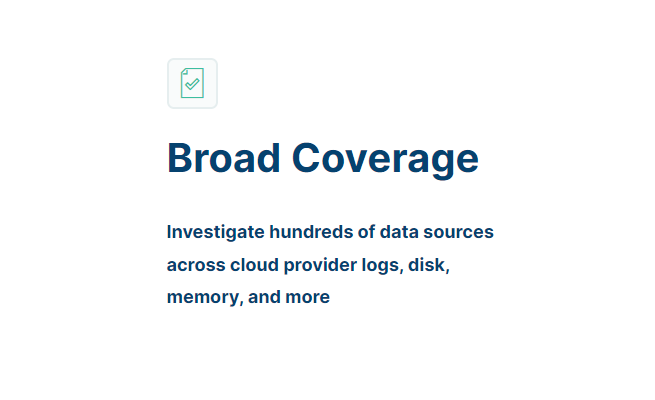
图11 数据覆盖描述
如图12所示[5]，针对具体的可疑活动，找到可疑活动的上下文，查看活动前期生成的文件或者后期执行的命令，进而分析文件内容，锁定可疑关键词，方便后续全局搜索，查找其他藏匿点。
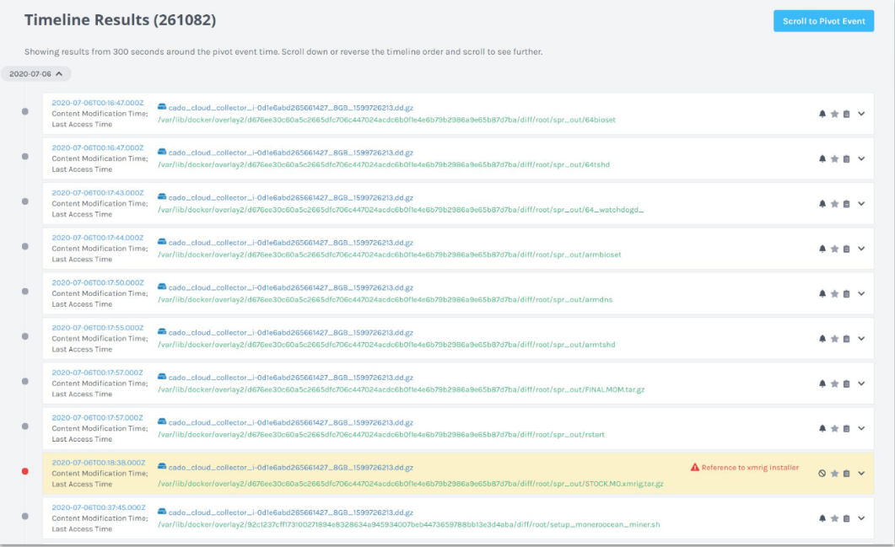
图12 xmrig异常活动搜索
值得一提的是，平台也支持对文件的基本解析，绘制链路关系，标注发现的异常点，从而帮助分析简化取证。但从现有资料来看，目前的解析方法可能只是固定的规则配置，比如图13中文件的特定地址匹配[5]，但即使是这个程度的解析也会给分析人员带来巨大的便捷。
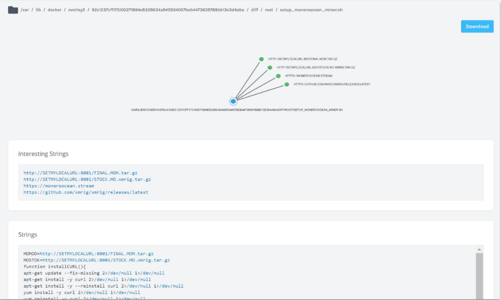
图13 外链矿池可疑文件解析
- 集成解决方案成熟
从官网材料获悉，Cado Response已有与Splunk SOAR和SentinelOne的集成方案。例如通过Cado Response和Splunk SOAR的集成，在事件检测之后，Splunk SOAR将触发Cado响应平台以在受影响的多云、跨云环境中捕获数据。
通过和SOAR集成，安全团队可以自定义剧本（如图14所示[[9]]），以便在检测到恶意活动后立即自动捕获关键事件证据。自定义剧本也为用户定制化需求提供了一种低成本且较为通用的实现方式，能够在扩充产品能力的同时，优化用户体验。
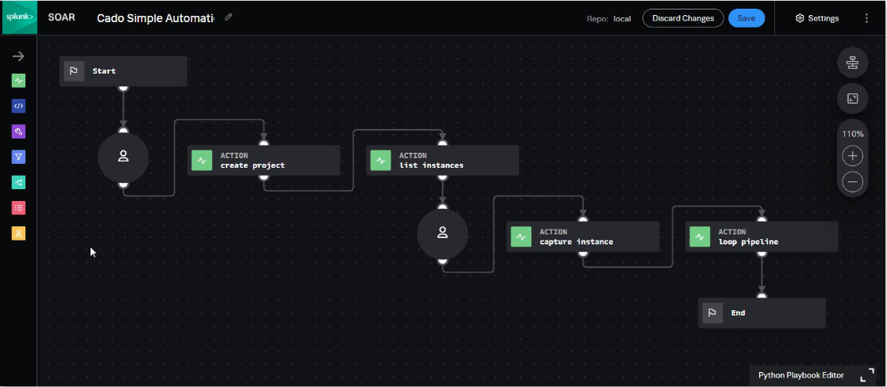
图14自定义剧本
通过与第三方链路安全产品的集成，实现如图15所示的[[10]]上下游联动，便能够加快事件响应速度、缩短调查和响应时间。利用端到端的自动化策略配置，能确保在事件数据消失之前捕获到事件数据。相信租户在云端的安全需求将会逐步被众多集成解决方案完全覆盖。
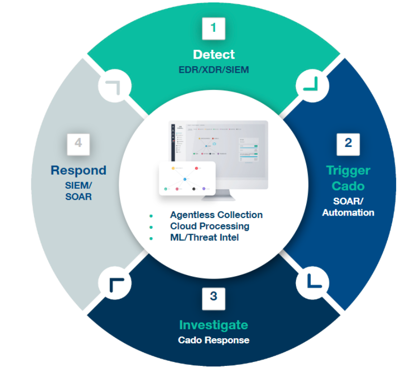
图15 安全响应方案工作流程
- 总结
从首席执行官兼联合创始人James Campbell的履历不难看出，Cado Response的产生应该是顺其自然的事情，我们猜测James在多年的网络事件响应和网络取证工作中已经深刻意识到人工搜集大面积情报的痛点和难点，特别是云环境场景下，而其丰富的取证最佳实践方案也最终会落到产品上。再看另一位联合创始人Chris Doman，威胁情报研究和实操经验丰富，单从团队阵容来看，也能给以投资人和客户足够的信心。
从云原生网络取证和响应的赛道来看，正如Cado Security官方宣称，目前来看专注于云原生网络取证和响应的产品Cado Response具有优势。且随着全球数字化的推进，云安全赛道毋容置疑是一个新的热点，云原生安全场景下的网络取证和响应则是必不可少的一环。早在2017 年，云安全联盟（CSA，Cloud Security Alliance）发布的《云计算关键领域安全指南V4.0》也将云取证重点关注。2019年中科院研究所也结合国内现状对云环境下的电子取证做了分析。随着我国《网络安全法》对网络运营商的责任和义务的强化，云取证在国内也必将成为云平台合理合法运营的重要保障[[11]]。在这些因素影响下，我们猜测Cado Security也将有快速的发展。
对于Cado Response的总结和预估: 该平台有强大的情报收集实践指导，加之既有的情报平台（ThreatCrowd）技术沉淀，相信其在情报的收集侧会保持不错的优势。虽然现有的材料没有明显体现出平台对情报的情景化和智能化的处理和预判，因此我们暂时还无法就该平台的智能化场景进行详细分析，但Cado Response的官网强调了机器学习在处理和预判中的作用，因此我们相信以后会在Cado Response的产品与宣传材料中看到更多关于机器学习的功能与特性。
参考文献
[1] Cado Security. Cado Leadership Team.
[2] IDC&Ermetic. State of Cloud Security 2021.
[3] Cado Security. AWS Deployment Overview.
[4] Cado Security. Securing and Investigating Containerized Applications Running on AWS ECS.
[5] Cado Security. ECS Import Requirements.
[6] WIZ. Agents are not enough: Why cloud security needs agentless deep scanning.
[7] Cado Security. Deploying Cado Host.
[8] Cado Security. Overview.
[9] Cado Security. Cado Response & Splunk SOAR Integration.
[10] Cado Security. The Ultimate Guide to Automating Incident Response.
[11] 中科院软件研究所. 云环境下的电子数据取证技术研究.